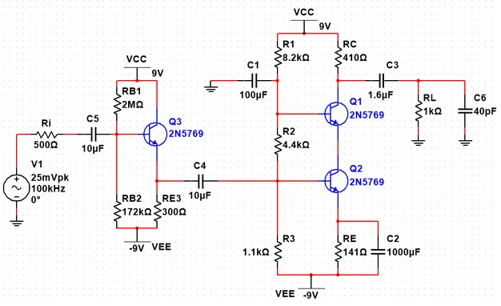
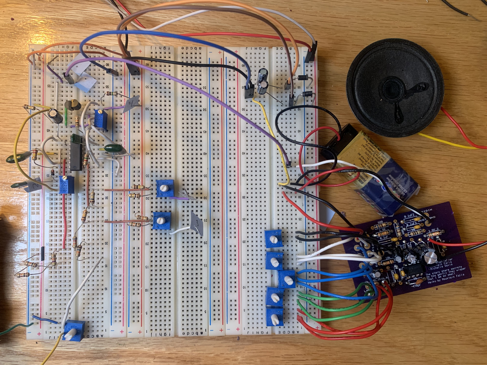
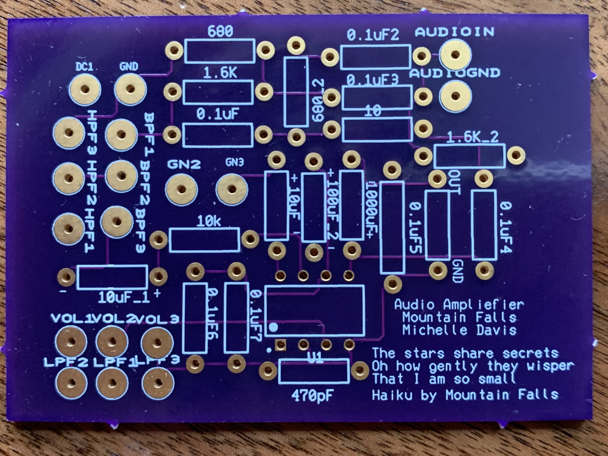
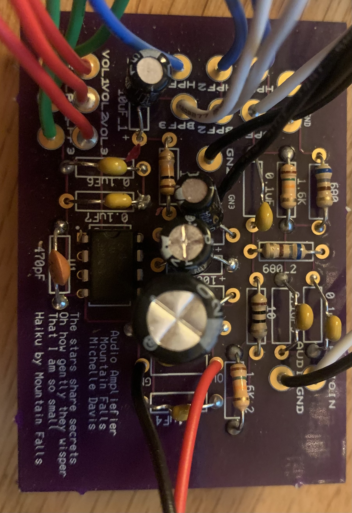
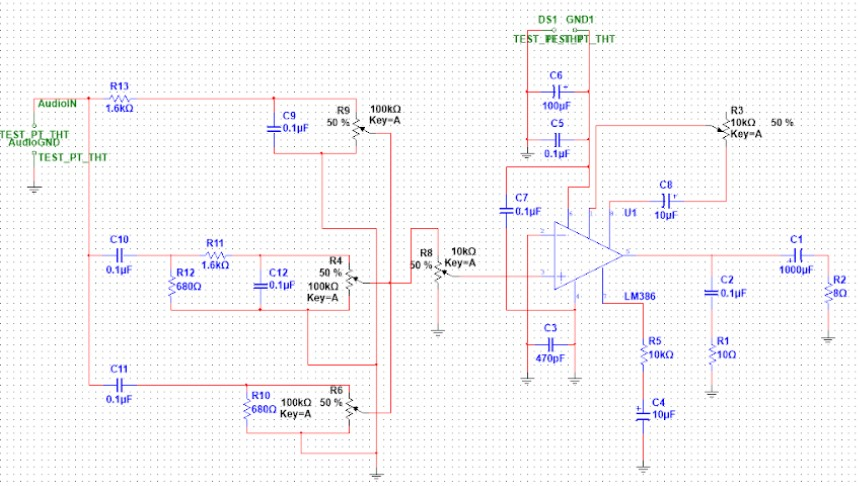

Mountain Falls is attending their last semester at Hamline University for Electrical Engineering with an Emphasis in Music Technology. Hamline University is a part of the Associated Colleges of the Twin Cities (ACTC) and through this program Mountain attended their Electrical Engineering courses at the ABET accredited University of St. Thomas.
Through their program Mountain has gained an understanding of linear and non-linear models of passive and active components and power sources as well as how real world components differ from their models. Mountain is confident in circuit analysis techniques including nodal and mesh analysis, equivalence theorems, and computer simulation of electronic circuits in NI Multisim on applications including operational and transistor amplifiers, filters, rectifiers, and other specialty circuits. They also have experience with Fourier Analysis, Laplace and Fourier transforms, and have used them to examine steady state and transient circuit behavior. During their program they have completed multiple design projects that apply their knowledge to solve design problems.
A final schematic for a transistor amplifier design challenge can be seen in the image below.

Click here to view a PDF of the full project report.
Mountain is currently working on a capstone project to finish off their self designed major. For this project they will design and fabricate a three voice hybrid digital-analog instrument featuring a three voice analog synthesizer that interfaces with digital inputs. This instrument will fit the basic form factor of an electric guitar and be played by “fretting” three resistive touch strips that run up the guitar's neck and by “plucking” (tapping) three pressure sensitive pads on the guitar's body. The project is currently in the early stages of development. Mountain has prototyped one Oscillator and is currently working on its volt per octave tracking.

Linear to exponential converter and voltage controlled oscillator prototype. The design is a variation of this VCO by David Haillant.
The prototype is currently amplified by a repurposed audio amplifier circuit that Mountain designed with a fellow St. Thomas student Michelle Davis for a design challenge project.
 The PCB for the amplifier designed using Ultiboard.
 The fully populated amplifier circuit.
 The final schematic for the amplifer.